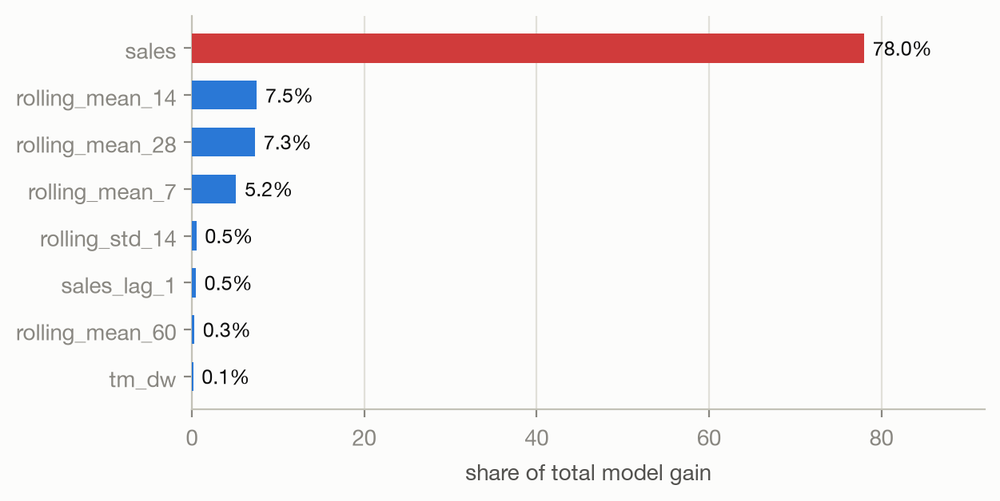
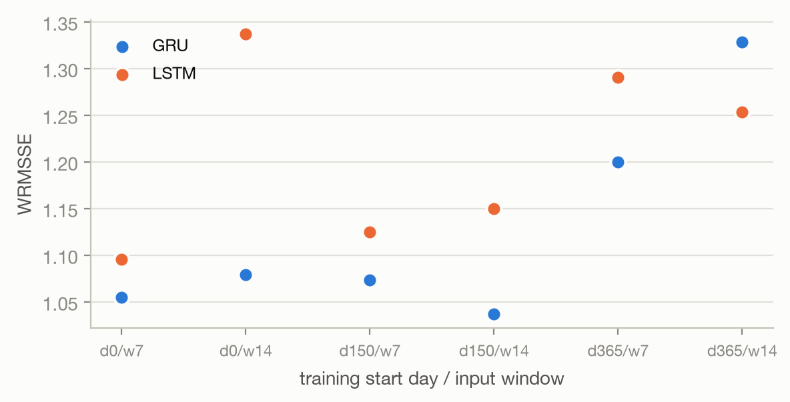
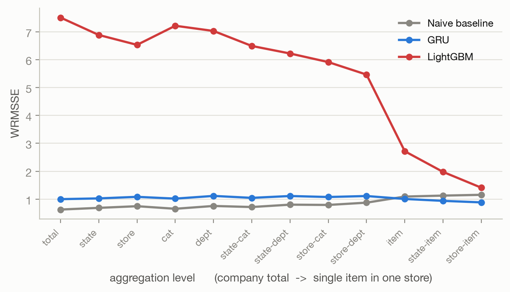

Walmart sells around 3,000 distinct products in each of ten stores, and someone has to decide how much of each to stock. Order too much and cash sits on a shelf; order too little and the sale walks out the door. The M5 competition turns that into a concrete problem: given six years of daily sales, weekly prices and a calendar of holidays, forecast the next 28 days for every product in every store.
I worked through three modelling approaches, starting with gradient boosting and moving into recurrent networks. The interesting part turned out not to be which model won. It was that none of them beat a forecast you could do in your head.
Three files, joined into one long table of 26.5 million rows — one row per product, per store, per day.
| File | Contents |
|---|---|
sales_train_evaluation.csv | 30,490 series × 1,941 days of unit sales |
sell_prices.csv | 6.8M weekly store-item prices |
calendar.csv | 1,969 days with holidays and SNAP benefit days |
The data is mostly zeros. A typical item in a typical store sells nothing on a typical day, which shapes every modelling decision that follows — it is why the tree model uses Tweedie loss and why the networks train on scaled inputs.
Everything before day 1,100 was dropped to keep memory in check, leaving about two and a half years of history. Models train on days up to 1,913 and are scored on days 1,914 to 1,941, which are held out entirely.
Plain error metrics are misleading here. Missing a fast seller by ten units matters more than missing a slow one by ten units, and an error on a $40 item costs more than the same error on a $2 item.
The competition metric, WRMSSE, handles both. Each series is scored against what a naive "same as yesterday" forecast would have achieved, so a value below 1.0 means you beat that baseline. Series are then weighted by the dollars they actually sold, and the whole thing is averaged across twelve levels of the hierarchy, from company-wide totals down to a single product in a single store.
I implemented it directly rather than relying on leaderboard feedback. That mattered more than expected: scoring takes seconds locally, so every experiment could be checked immediately instead of being rationed against a daily submission limit.
Gradient boosting on engineered features: lagged sales at 1, 7, 14 and 28 days, rolling means and standard deviations over five window lengths, price statistics per item, and calendar flags. One model per store per week of the horizon, forty in total, each trained with Tweedie loss to handle the mass of zeros.
On the holdout it scored 0.0088. That is not a good result. That is a broken one.
A forecast cannot be that accurate, so I checked what the model was leaning on.

The target column had ended up inside the feature set. The model was not forecasting sales; it was reading them. Tracing it back, the cause was a missing comma in the list of columns to exclude:
'date', 'wm_yr_wk', 'weekday' # time columns 'sales' # target
Python joins two adjacent string literals into one. Those two lines produce
'weekdaysales', a column that does not exist, so neither weekday nor
sales was actually excluded. No error, no warning, and a validation score that
looks like a breakthrough.
Rather than quietly fix it, I kept the switch and measured the damage. The same forty models were scored twice on the same 28 days — once with the sales column present, once with it blanked out, which is what happens whenever you forecast a future that has not occurred yet.
The gap is a factor of 620. The lesson I took from it is not "check for leakage" in the abstract — it is that a validation score cannot detect this on its own. The number looked better the more broken the model became.
A different framing: transpose the table so days are rows and all 30,490 series are columns, scale everything to 0–1, and train one network to predict tomorrow for every series at once. A binary flag marks whether tomorrow is a holiday. Twenty-eight days are produced by predicting one day, feeding the prediction back in, and repeating.
I swept both architectures across two input window lengths and three training start points.

GRU beat LSTM fairly consistently, and starting from day 150 with a 14-day window was best at 1.0365. Both models train quickly — under a minute each.
The hyperparameter search returned 1.2453, noticeably worse than the untuned model at 1.0365. The cause is the validation split. Keras holds out the last 10% of samples, which on a time series means the most recent 190 days — the days most similar to the ones being forecast. Early stopping then rolled the weights back further still. The tuned model had simply seen less of the recent past.
The same configuration trained on three random seeds gave 0.9871, 1.0756 and 1.2756. That is a spread of 0.29 with nothing changed but the starting random numbers. Any single run quoted to five decimal places is reporting noise.
An encoder GRU reads the last 14 days, its final state is repeated 28 times, and a decoder emits the whole horizon in one pass. No recursion, no error feeding back on itself, and no extra features at all.
It scored 1.1095 — slightly worse than the recursive GRU, and the fastest of the three to train. Given that it sees only raw sales and no calendar or price signal, that is a reasonable showing, but it did not justify the extra architecture.

| Model | WRMSSE | Note |
|---|---|---|
| Naive baseline | 0.8377 | repeat the last 28 days |
| GRU | 1.0365 | best model trained |
| LSTM | 1.0953 | |
| Seq2Seq GRU | 1.1095 | fastest to train |
| LightGBM | 5.4464 | target leakage, see above |
No model beat the baseline. The best of them, the GRU, is 24% worse than repeating last month's sales.
It would be easy to stop there and call the exercise a failure, but the forecast itself explains what went wrong, and it is not subtle.

Sales run on a strong weekly cycle — weekends far above weekdays, every week, for years. The naive forecast reproduces that cycle perfectly, because it is literally a copy of four recent weeks. The GRU does not. It settles into a nearly flat line around the average and stays there.
This is what recursive forecasting does when each prediction is fed back as input. Small errors compound, the signal washes out, and by a few steps in the model is predicting its own average. It captures the level of demand and loses the shape.

Two things stand out. The GRU actually overtakes the baseline at the finest levels — individual items in individual stores, on the right of the chart. At that scale, most series are sparse and erratic, and predicting a smooth average is a defensible strategy. It only loses because it is flat where the aggregate is not.
The leaked LightGBM shows the opposite pattern and it is diagnostic. Its error grows as you aggregate upward, which healthy forecasts never do — independent errors cancel out when summed. Growing error means every series is wrong in the same direction at once, which is the signature of a model producing systematic nonsense rather than noisy estimates.
The headline result is that four models lost to a forecast requiring no model at all. That is worth stating plainly rather than burying, because the alternative — reporting the GRU's 1.0365 as a success because it beat the other models — would have been easy and wrong.
The baseline is what made the difference. Without it, the LightGBM run at 0.0088 reads as a triumph and the GRU reads as a solid result. With it, the first is visibly impossible and the second is visibly not good enough. Both conclusions came from one line of code that copies last month's sales forward.